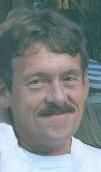
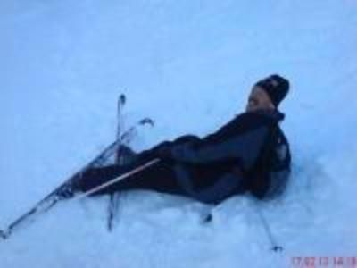
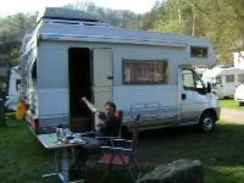

Willkommen auf unserer Homepage
Ich freue mich, dass Sie meine Internet-Präsenz besuchen. Ich hoffe, dass Sie beim Stöbern darin viel Spaß haben werden. Ich werde mich bemühen diese Page immer aktualisiert zu halten.
In dieser Homepage möchte ich Euch einen kleinen Einblick in meinen Altag und Allem was dazugehört geben.
Zunächst möchte ich mich bei Euch vorstellen.
Ich heiße Klaus und bin am 18.November 1957 in Altdorf b. Nürnberg geboren. Mein Vater starb als ich erst 2 1/2 alt war. Aufgewachsen bin ich als "Mittlerer" zwischen zwei Schwestern in Burgthann im schönen Schwarzachtal, wo ich auch bis 1971 zur Schule ging.
Danach zogen wir nach Nürnberg. Dort beendete ich meine Schulausbildung und absolvierte eine Lehre als Fleischer. Nach der Lehre bekam ich bei der damals noch existierenden Großhandelskette Coop eine Stelle als Fleischergeselle.
Bereits nach 15 Monaten beendete ich dann meine Laufbahn als Metzger endgültig und wandte mich meiner eigentlichen Berufung, Rettungsdienst,zu.
Seit 1978 bin ich nun hauptberuflich in diesem Beruf als Rettungsassistent tätig.
Seit 1993 arbeite ich auf der Rettungswache in Gräfenberg und hoffe, dort auch in Pension gehen zu können.
Und nun viel Spaß auf den folgenden Seiten.
Über einen Eintrag in mein Gästebuch würde ich mich sehr freuen.
Für Anregungen oder Kritik bin ich jederzeit aufgeschlossen.
Klaus im Schnee
Klaus vor dem Womo
 |